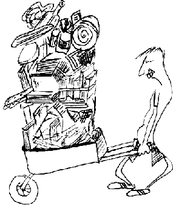
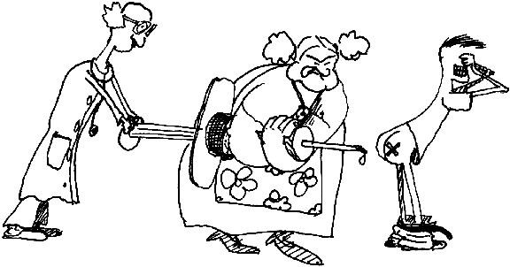

France has always been notorious for its petty bureaucracy. This is as true in Bordeaux as anywhere. There's little you can do except put up with it and jump through all of the hoops. Remember that saying 'je suis étudiant ERASMUS ' often smoothes the way when faced with lots of red tape in the university.
You must go and register in your department before the start of term. You will have to guess as to when you can do this - it may be as early as the middle of September or as late as the end of October depending on when your lectures start. You go to the Scolarité , jump the huge queue and say that you're an ERASMUS student. You will get given your student card and various documents including something you take to the library to get your library card and a certificat de scolarité that you need for the carte de séjour .
Anyone spending more than three months in France is supposed to get one of these but most people don't bother. However, it's well worth getting one because then you can get the allocation de logement , the rent rebate from the Caisse d'Allocations Familiales , which is quite a substantial sum. This golden carrot will take up lots of your time and effort. Just think of it as good experience in dealing with bureaucrats.

Remember to take everything you need when you apply for the
carte de séjour
|
If you live in Bordeaux you have to go to the préfecture . If you live on the campus, you go to the police station in Talence if you live in Village 1 and the police station in Pessac otherwise. You fill in several forms and get a form back that tells you to go back about six weeks later... The things you need are: passport, five passport photographs, full birth certificate, French translation of the birth certificate, a 200F timbre fiscal (just a stamp), E111, certificat de scolarité that you get when you register at the university, an attestation de bourse which should be available in the international office in your department in Bordeaux and an attestation de logement that you can get from the secretary in your village or from your landlord. However, this list can vary depending on where you go and possibly even depending on who you see. They shouldn't ask for more than this but we're not promising anything. The photos may have to be in black and white or you may get away with colour ones. The stamp is sometimes less than 200F - wait until you are told at the police station what you need before getting one because there's not much else you could use one for. If you have medical insurance take that along as well. The best thing to do is to take along all of the documents as well as photocopies of them all. Whatever you do don't relinquish any originals that you want to see again. When you think you have got everything, telephone to make sure that you don't need an appointment and then go along with everything. Hopefully you will be okay with what you've got, but you are bound to be missing something and will have to go back. It is important to apply as soon as possible because the rent rebate is only back dateable to the date you applied for the carte de séjour . After you have applied, direct any enquiries to the Préfecture de la Gironde - 05.56.90.61.94. The Allocation de LogementThe Allocation de Logement is the rent rebate that you can get. You usually get about 50% of your monthly rent back. When you move in to hall ask the secretariat for the form. First, get a fiche d'état civil from the town hall with your passport. While you are there ask them for official (i.e. stamped) photocopies of your birth certificate and the translation. Normal photocopies of these documents are not acceptable for official purposes. When you have finally got your carte de séjour take that, your fiche d'état civil , your birth certificate and the translation, your passport and a kitchen sink to the Caisse d'Allocations Familiales . Bank AccountsIt is not essential to have a bank account in France but you may find it useful. However, if you can get by without an account you will save yourself a lot of time and effort. The main problem with French bank accounts is that there are charges for almost everything and transferring funds from the UK isn't particularly cheap. An easier and possibly cheaper alternative is to just use a British visa card. If you use the Lloyds payment card, for example, you can withdraw money from cash machines for a charge of one and a half percent and you can pay in shops completely free of charge. If you want to open an account you have to go to the bank to make an appointment. Take your passport, a couple of hundred Francs to open the account, your banker's draft if you've got one and an attestation de logement which you can get from the secretariat at your hall or from your landlord. It is worth shopping around to get the best facilities and smallest charges. For example some banks offer overdraft facilities and a free Carte Bleu . The cheapest way to transfer funds into your French account is by banker's draft. It is important to remember that unless you've got agreed overdraft facilities, it is illegal to go overdrawn and under Napoleonic law you could even end up being banned from having a French bank account for ten years. Seeing a DoctorThere is a health centre on the campus just behind RU2 called Le Centre de Médécine Préventatif . If you need to see a doctor just wander in here and they'll sort it out. Consultations are free but if you do have to pay for anything, keep all the labels and receipts so you can try to claim it back with the E111 form. |
